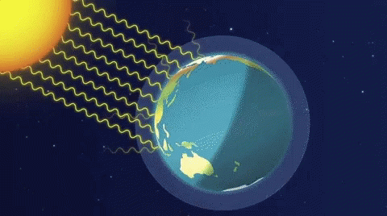

Chemistry Journal: Global Warming and Reaction Rates
Callout
Global Warming
is an increase in Earth’s average temperature.
In 2009, representatives of the G8 countries met in Copenhagen, Denmark, and agreed to limit global warming so that, by 2020, Earth’s average temperature will have risen no more than 2 oC above pre-industrial levels.

7.gif)
New Greenhouse Gases
Human activities continue to release greenhouse gases, some of which have never been in the atmosphere. For example, in 2010 scientists found new “super” greenhouse gases in the atmosphere:
- sulfuryl fluoride, SO2F2(g) – fumigant used in pest control, which was believed to be more environmentally friendly than older fumigants.
- trifluoromethyl sulfur pentafluoride, SF5CF3(g) – released from electronic devices and microchips as a by-product.
- nitrogen trifluoride, NF3(g) – used in the electronics industry for plasma etching and equipment cleaning